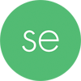
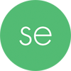

ЗАРЕГИСТРИРОВАНО
ДОМЕННОЕ ИМЯ
postnauka.ru
23
сен
сен

2011
 постнаука запускает собственную
постнаука запускает собственную 
Выход в глобальный

Выход в глобальный | 73% | 3% | 2% |
| Россия | Беларусь | США |
| 10% | 2% | |
| Украина | Казахстан |
| 57% | |
| Мужчины | |
| 43% | |
| Женщины |
| 18% | 20% | 7% |
| 18-24 | 35-44 | 55-64 |
| 33% | 16% | 6% |
| 25-34 | 45-54 | 65+ |